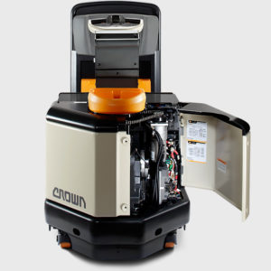

El remolque es una operación dura, tanto para los tractores como para los operadores. La serie TR de Crown proporciona la potencia de remolque y la fuerza que necesita para mejorar considerablemente su rendimiento mientras transporta cargas pesadas.
Para remolcar una carga sobre ruedas de hasta 10,000 libras una y otra vez se requiere una unidad de potencia de alto rendimiento.
La serie TR cuenta con un potente motor de AC y la unidad de potencia más grande de la industria (fabricada por Crown), una combinación que proporciona una durabilidad y una potencia inigualables.
Los tractores de remolque de Crown combinan componentes robustos y acero de gran grosor para asegurar el rendimiento incluso en las aplicaciones más duras.

Los tractores de remolque de Crown proporcionan valor a largo plazo con un menor costo total de la propiedad a lo largo del tiempo.
La serie TR posee un diseño robusto y confiable muy fácil de mantener y reparar.
El compartimento del operador de la serie TR proporciona una comodidad y una estabilidad excepcionales que permiten a los operadores rendir al máximo durante todo el turno.
Gracias a la innovadora dirección asistida electrónica de Crown y al completo sistema de control Access 1 2 3 de Crown, los operadores disfrutan de un mejor manejo tanto dentro como fuera del equipo.
Además, el exclusivo manubrio de control X10 también contribuye a mejorar la simplicidad y la comodidad.
Como si de un tren se tratase, el tractor de remolque de operador a bordo de alto rendimiento de la serie TR puede utilizarse para remolcar carros, tanto para operaciones de transporte de materiales como de picking de bajo nivel.